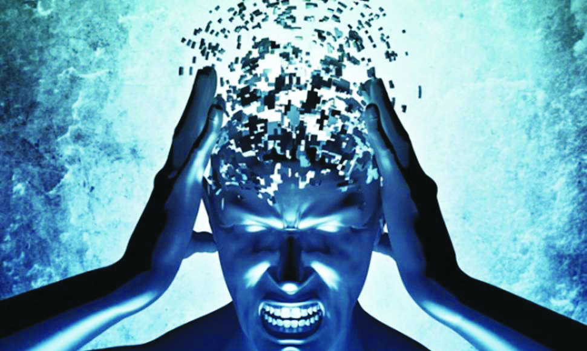

Las enfermedades o trastornos mentales son afecciones que impactan su pensamiento, sentimientos, estado de
ánimo y comportamiento. Pueden ser ocasionales o duraderas (crónicas). Pueden afectar su capacidad de
relacionarse con los demás y funcionar cada día.

Tipos de enfermedades mentales
Trastornos de ansiedad
La ansiedad es un sentimiento de miedo, temor e inquietud. Puede hacer que sude, se sienta
inquieto y tenso, y
tener palpitaciones. Puede ser una reacción normal al estrés. Por ejemplo, puede sentirse ansioso cuando se
enfrenta a un problema difícil en el trabajo, antes de tomar un examen o antes de tomar una decisión
importante.
Si bien la ansiedad puede ayudar a enfrentar una situación, además de darle un impulso de energía o ayudarle
a
concentrarse, para las personas con trastornos de ansiedad el miedo no es temporal y puede ser abrumadora.
Depresión
La depresión es un trastorno del cerebro. Existen muchas causas, incluyendo factores
genéticos, biológicos,
ambientales y psicológicos. La depresión puede comenzar a cualquier edad, pero suele empezar en la juventud
o en
adultos jóvenes. Es mucho más común en las mujeres. Las mujeres también pueden tener depresión posparto
después
de dar a luz. Algunas personas tienen un trastorno afectivo estacional en el invierno. La depresión es una
parte
del trastorno bipolar.
Existen tratamientos eficaces para la depresión, incluyendo antidepresivos y terapia de conversación, o
ambos a
la vez.
Trastorno bipolar
El trastorno bipolar es una enfermedad mental severa. Las personas que la sufren experimentan
cambios de ánimo
poco comunes. Pueden pasar de ser muy activos y felices a sentirse muy tristes y desesperanzados. Y, así,
empezar el ciclo otra vez. Frecuentemente tienen estados de ánimo normales entre uno y otro ciclo. A las
sensaciones de euforia y actividad se les llama manías. A las de tristeza y desesperanza se les llama
depresión.
Las causas de este trastorno no son del todo claras. Pueden ser genéticas, o sea que pueden tener una
tendencia
familiar. Otra causa puede ser una estructura anormal de las funciones del cerebro.
El trastorno bipolar suele empezar en los últimos años de la adolescencia o al inicio de la edad adulta pero
niños y adultos también pueden sufrirlo. La enfermedad, generalmente, dura toda la vida.
Si no se trata, el trastorno bipolar puede dañar las relaciones personales, causar bajo rendimiento en la
escuela o en el trabajo e incluso el suicidio. Sin embargo, existen tratamientos eficaces para tratar los
síntomas: medicinas y "terapia de conversación". La combinación de ambas suele ser lo que mejor funciona.
Trastornos del estado de ánimo
Algunas personas se sienten tristes o irritables de vez en cuando y pueden decir que están
de mal humor. Los trastornos del estado de ánimo son diferentes porque afectan a diario el estado emocional
de la persona. Aproximadamente, una de cada 10 personas mayores de 18 años, tiene un trastorno del estado de
ánimo. Estos trastornos incluyen depresión y trastorno bipolar (también conocido como depresión maníaca)
Los trastornos del estado de ánimo pueden incrementar los riesgos de enfermedades del corazón, diabetes y
otras enfermedades en una persona. Los tratamientos incluyen medicinas, psicoterapia o la combinación de los
dos. La mayoría de las personas con trastornos del estado de ánimo pueden llevar una vida productiva con el
tratamiento adecuado.
Trastornos de la personalidad
Los trastornos de la personalidad son un grupo de enfermedades mentales. Involucran un
patrón a largo plazo de pensamientos y comportamiento que no son saludables y resultan inflexibles. Esta
conducta provoca problemas serios con las relaciones y el trabajo. Las personas con trastornos de la
personalidad tienen dificultades para lidiar con el estrés y los problemas cotidianos. Suelen tener
relaciones tormentosas con otras personas.
No se conoce la causa de los trastornos de la personalidad. Sin embargo, los genes y las experiencias de la
niñez pueden representar un papel importante.
Los síntomas de cada trastorno de personalidad son diferentes. Pueden ser leves o severos. A las personas
con estos trastornos les cuesta darse cuenta que tienen un problema. Para ellos, sus pensamientos son
normales y muchas veces culpan a la otra persona por sus problemas. Intentan pedir ayuda debido a sus
dificultades con sus relaciones personales y/o su trabajo. El tratamiento suele incluir psicoterapia y,
algunas veces, medicinas.
Trastorno de estrés postraumático
El trastorno de estrés postraumático (TEPT) es una afección de salud mental que algunas
personas desarrollan tras experimentar o ver algún evento traumático. Este episodio puede poner en peligro
la vida, como la guerra, un desastre natural, un accidente automovilístico o una agresión sexual. Pero a
veces el evento no es necesariamente peligroso. Por ejemplo, la muerte repentina e inesperada de un ser
querido también puede causar TEPT.
Es normal sentir miedo durante y después de una situación traumática. El miedo desencadena una respuesta de
"lucha o huida". Esta es la forma en que el cuerpo busca protegerse de posibles peligros. Causa cambios en
el cuerpo, como la liberación de ciertas hormonas y aumenta el estado de alerta, la presión arterial, la
frecuencia cardíaca y la respiración.
Con el tiempo, normalmente la mayoría de las personas se recuperan bien. Pero las personas con TEPT no se
sienten mejor. Se sienten estresados y asustados mucho después de que el trauma haya terminado. En algunos
casos, los síntomas de TEPT pueden comenzar más tarde. También pueden aparecer y desaparecer con el tiempo.
¿Como tratar las enfermedades mentales?
El tratamiento depende del trastorno mental que usted tenga y qué tan grave sea. Junto a su proveedor
trabajarán en un plan de tratamiento solo para usted. Por lo general, implica algún tipo de terapia. También
puede tomar medicamentos. Algunas personas también necesitan apoyo social y educación para manejar su
afección.
En algunos casos, es posible que necesite un tratamiento más intensivo. Si su enfermedad mental es grave o
tiene riesgo de hacerse daño a usted o a alguien más, es posible que deba ir a un hospital psiquiátrico. En
el hospital, recibirá consejería, discusiones grupales y actividades con profesionales de salud mental y
otros pacientes.